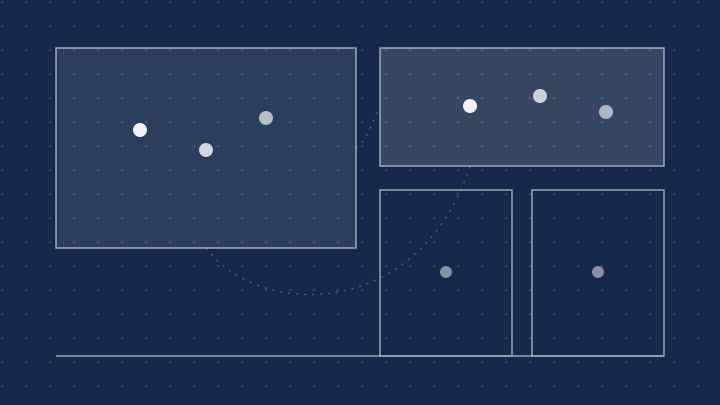
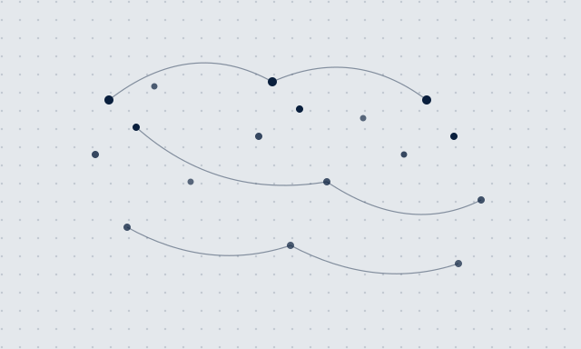

ANNUAL TRENDS REPORT · 2026
五个趋势、两个案例、两条建议：写给正在重新定义工作方式的管理者与团队
2026.09 · 共 10 页
01 · 趋势
会议在减少，文档在增多。优秀的团队把进度写进共享文档，而不是塞进日历。
异步不是回复变慢，而是默认不打扰：每个人都在自己状态最好的时间深度工作。
同步会议 ↓ · 文档协作 ↑
02 · 趋势
人们不再为打卡而来，而是为协作、社交与仪式感而来：办公室从工位集合，变成体验空间。
留下来的理由只有一个——有些对话，只能面对面发生。

03 · 趋势
每个团队都多了一位不知疲倦的成员：起草初稿、整理纪要、回答重复的问题。
它不出席会议，但随时在线。
关键数据 · KEY NUMBERS 2026
73%
团队采用混合办公
58
分钟 / 天
日均节省的通勤时间
21%
远程团队离职率下降
数据来源：2026 远程办公行业调查
案例 01 · GITLAB
GitLab 的 1600 多名员工分布在全球 60 多个国家，没有一间总部办公室——一切流程以公开手册为准。
手册公开 2000 余页，任何人可查阅、可提交修改
新员工的第一课：学会异步沟通，而不是参加会议

案例 02 · OFFICE REDESIGN
一家咨询公司退租了半层写字楼，把留下的空间重新分给了协作、客户与安静。
改造前
七成工位长期空置
改造后
会议舱与协作区面积翻倍
建议 01 · 给管理者
别再用在线时长衡量产出。以结果和交付物为准，远程才不是福利，而是制度。
考核什么，就得到什么。
建议 02 · 给团队
文档不是备忘录，而是组织记忆的载体：决策可追溯、知识可检索，新员工不必在聊天记录里迷路。
写下来的决策，才算数。
10 · 收束
它是一种协作方式。
END · 2026 远程办公趋势报告